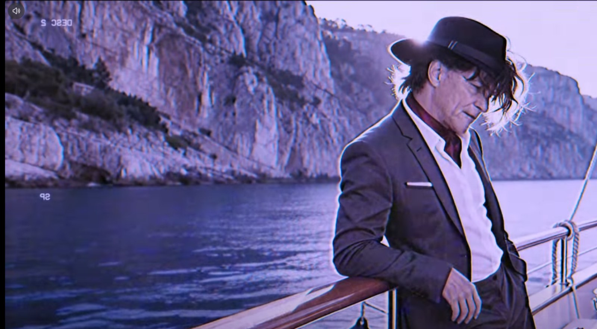

Autorske pesme, književni tekstovi pretvoreni u muziku, staro muzičko i jezičko nasleđe u novom ruhu, kao i eksperimenti sa glasom, zvukom i AI alatima.

Izdvojeni rad · autorska pesma i muzički spot · 2025.
Daj svom telu radost, Marijana
Laka letnja pop-pesma Quark Marka, oblikovana kao vedra i komunikativna numera sa jasnim refrenom i retro-hedonističkom atmosferom. Objavljena je preko DistroKida, a emitovana i na Radio Bumu i drugim radio-stanicama uz dozvolu autora.
Autorski doprinos
Tekst, koncept, izbor žanra i muzičkih verzija, završno oblikovanje muzike, selekcija kadrova, dramaturgija spota i video-montaža — Quark Mark.
Realizacija
Muzika, glas i početni vizuelni materijal nastali su uz pomoć AI alata. Vizuelni materijal je potom selektovan, skraćen, kombinovan i montiran u završni spot.